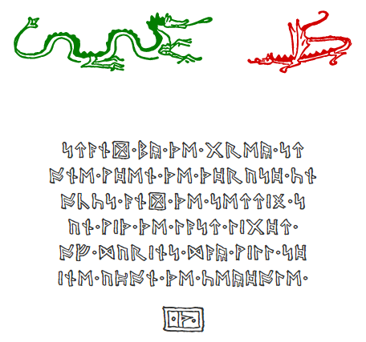

BabelStone Moon Runes is a Unicode Runic font based on the moon runes shown on Thror's map in The Hobbit. See Moon Runes and Goblin Alphabet for more information.
This font maps Tolkien's moon runes to the appropriate Unicode Runic characters. The character coverage of the font has been extended to include all 34 runes of the fully extended Anglo-Saxon futhorc (several of which are only very rarely used), but the font does not include glyphs for any Runic letters not used in the Anglo-Saxon Runic script. Since version 1.03 the font also covers three runes devised by J. R. R. Tolkien and five cryptogrammic runes used on the Franks Casket, which were added in Unicode 7.0 (released June 2014). On Thror's map and elsewhere, Tolkien uses separate runic letters to represent English c and k, which correspond to U+16B3 RUNIC LETTER CEN and U+16F1 RUNIC LETTER K in version 1.03 and later of this font. Tolkien also uses two quite different forms of the Runic letter dæg ᛞ (U+16DE RUNIC LETTER DAGAZ DAEG D) on Thror's map, but these seem to be stylistic glyph variants, and so the font contextually substitutes the more complex form for the simpler form in certain circumstances.
The font also includes three special characters with no Unicode mappings, that can only be accessed indirectly ... and only if your system allows it (should be be OK under Windows Vista and later). One of the secret characters should be easy enough to find if you understand how Unicode works, but the other two can only be invoked by means of the appropriate magic spell (simply type the magic spell and the corresponding character will appear in a puff of smoke). [Five years and 88 days after the font was first released I have revealed the magic spells below.]
BabelStone Moon Runes (20 points)

The tables below render each character in the BabelStone Moon Runes font, either using the font installed on your local machine or using a WOFF font if the font is not installed on your local machine.
| Code Point | Character Name | Glyph |
|---|---|---|
| U+16A0 | RUNIC LETTER FEHU FEOH FE F | ᚠ |
| U+16A2 | RUNIC LETTER URUZ UR U | ᚢ |
| U+16A3 | RUNIC LETTER YR | ᚣ |
| U+16A6 | RUNIC LETTER THURISAZ THURS THORN | ᚦ |
| U+16A9 | RUNIC LETTER OS O | ᚩ |
| U+16AA | RUNIC LETTER AC A | ᚪ |
| U+16AB | RUNIC LETTER AESC | ᚫ |
| U+16B1 | RUNIC LETTER RAIDO RAD REID R | ᚱ |
| U+16B3 | RUNIC LETTER CEN | ᚳ |
| U+16B7 | RUNIC LETTER GEBO GYFU G | ᚷ |
| U+16B8 | RUNIC LETTER GAR | ᚸ |
| U+16B9 | RUNIC LETTER WUNJO WYNN W | ᚹ |
| U+16BB | RUNIC LETTER HAEGL H | ᚻ |
| U+16BE | RUNIC LETTER NAUDIZ NYD NAUD N | ᚾ |
| U+16C1 | RUNIC LETTER ISAZ IS ISS I | ᛁ |
| U+16C4 | RUNIC LETTER GER | ᛄ |
| U+16C7 | RUNIC LETTER IWAZ EOH | ᛇ |
| U+16C8 | RUNIC LETTER PERTHO PEORTH P | ᛈ |
| U+16C9 | RUNIC LETTER ALGIZ EOLHX | ᛉ |
| U+16CB | RUNIC LETTER SIGEL LONG-BRANCH-SOL S | ᛋ |
| U+16CF | RUNIC LETTER TIWAZ TIR TYR T | ᛏ |
| U+16D2 | RUNIC LETTER BERKANAN BEORC BJARKAN B | ᛒ |
| U+16D6 | RUNIC LETTER EHWAZ EH E | ᛖ |
| U+16D7 | RUNIC LETTER MANNAZ MAN M | ᛗ |
| U+16DA | RUNIC LETTER LAUKAZ LAGU LOGR L | ᛚ |
| U+16DD | RUNIC LETTER ING | ᛝ |
| U+16DE | RUNIC LETTER DAGAZ DAEG D | ᛞ |
| U+16DF | RUNIC LETTER OTHALAN ETHEL O | ᛟ |
| U+16E0 | RUNIC LETTER EAR | ᛠ |
| U+16E1 | RUNIC LETTER IOR | ᛡ |
| U+16E2 | RUNIC LETTER CWEORTH | ᛢ |
| U+16E3 | RUNIC LETTER CALC | ᛣ |
| U+16E4 | RUNIC LETTER CEALC | ᛤ |
| U+16E5 | RUNIC LETTER STAN | ᛥ |
| U+16EB | RUNIC SINGLE PUNCTUATION | ᛫ |
| U+16EC | RUNIC MULTIPLE PUNCTUATION | ᛬ |
| U+16ED | RUNIC CROSS PUNCTUATION | ᛭ |
| U+16F1 | RUNIC LETTER K | ᛱ |
| U+16F2 | RUNIC LETTER SH | ᛲ |
| U+16F3 | RUNIC LETTER OO | ᛳ |
| U+16F4 | RUNIC LETTER FRANKS CASKET OS | ᛴ |
| U+16F5 | RUNIC LETTER FRANKS CASKET IS | ᛵ |
| U+16F6 | RUNIC LETTER FRANKS CASKET EH | ᛶ |
| U+16F7 | RUNIC LETTER FRANKS CASKET AC | ᛷ |
| U+16F8 | RUNIC LETTER FRANKS CASKET AESC | ᛸ |
| Code Point | Character Name | Glyph |
|---|---|---|
| U+200B | ZERO WIDTH SPACE | |
| U+200C | ZERO WIDTH NON-JOINER | |
| U+200D | ZERO WIDTH JOINER | |
| Code Point | Character Name | Glyph |
|---|---|---|
| U+20DE | COMBINING ENCLOSING SQUARE | ⃞ |
| <U+16A6 U+20DE> | COMBINING ENCLOSING SQUARE | ᚦ⃞ |
Magic spells may not work in your browser (do not work in IE 11 or Edge, but do work in latest versions of Firefox and Chrome), but should work in Microsoft Office and most other Unicode-aware applications.
| Code Point | Character Name | Glyph |
|---|---|---|
| <U+16CB U+16D7 U+16AA U+16A2 U+16B7> | SMAUG | ᛋᛗᚪᚢᚷ |
| <U+16B9 U+16A3 U+16B1 U+16D7> | WYRM | ᚹᚣᚱᛗ |
| Script | Language | Features | Explanation |
|---|---|---|---|
| Runic <runr> | Default <dflt> | Glyph Composition Decomposition <ccmp> | Contextual glyph forms and Easter eggs |
| Version | Date | Notes |
|---|---|---|
| 1.00 | 2009-01-01 | Initial release |
| 1.01 | 2010-01-01 | |
| 1.02 | 2013-11-06 | Licensed under SIL Open Font License 1.1 |
| 1.03 | 2014-03-29 | Added three runes devised by J. R. R. Tolkien (U+16F1 ... U+16F3) and five cryptogrammic runes used on the Franks Casket (U+16F4 ... U+16F8) which were added in Unicode 7.0 |
| 7.000 | 2018-02-15 | Colourized the dragons |
BabelStone Moon Runes is licensed under the SIL Open Font License 1.1, which means you are free to use it for personal or commercial purposes, and to redistribute it by itself or as part of a free or commercial software package, just as long as you do not sell the font on its own. The license also allows you to modify the font in any way you like, as long as the modified font does not use "BabelStone" in its name. Please read the license for details.